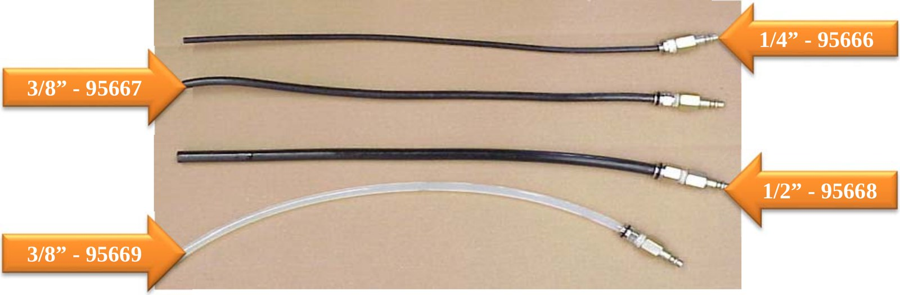

Doc no. MOC-TSB-14-06 // Vol. 14 No. 06 // May 13, 2014 // Driveline
Differential Adapter Part Numbers
95644
The hose adapters in the Differential Adapter Kit (Part No. 95644) now have individual part numbers so they may be ordered separately when needed. The part number for each individual hose adapter is listed below.
What's new
Contact
For more information, contact the Machine & Equipment Department at 866.244.6621.

Part numbers
| Part No. | Description | Notes |
|---|---|---|
| 95644 | Differential Adapter Kit | |
| 95666 | Adapter, Differential, 1/4" Open Hose (Dekabon) | |
| 95667 | Adapter, Differential, 3/8" Open Hose (Dekabon) | |
| 95668 | Adapter, Differential, 1/2" Open Hose (Dekabon) | |
| 95669 | Adapter, Differential, 3/8" Open Hose (Nylon) |